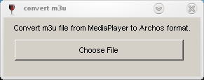

Back
to home
page
Back
to previous
page
M3u2Archos
Introduction
Download
Usage
About
the authors
Introduction
A friend of mine faced the following problem: he sets up a playlist
with his ARCHOS 504 media player, he connects the ARCHOS player to a PC
with
an USB link and he plays the playlist under Windows Media Player. But
when he plays back the playlist on the ARCHOS player, the playlist is
no longer recognised.
I looked at the content of the file before
and after the submission to Windows Media Player and it
appears
that we are facing the usual problem of "/" versus "\" in the pathnames
of the audio files as an ARCHOS media player is running Linux.
To solve the problem, a colleague and I designed a simple Windows
utility called M3u2Archos to
translate the playlist generated by Windows Media Player into ARCHOS
format.
Download
M3u2Archos can be downloaded from the
author's web site:
- Source package (tgz: tar compressed file)
- Executable
The sources are very simple as they consist of a simple
translation function modifying the "\" of the pathnames of the playlist
into "/". The graphical part is based on MinGW.
If
you don't have any compilation environment or do not want to compile
anything, just peek the executable (.exe file) and install it
on
your disk.
Usage
The following steps explain how to used the program (this is pretty
simple !). The playlist file coming from the ARCHOS 504 and modified by
Windows Media Player is translated back into ARCHOS format (the
original file saved into a .bak file in the same directory as the
original). Sorry, the interface is a mix between french and english...
- Launch the program and you will see a window looking like:

- Select the m3u file that you want to translate from Windows
Media Player to Archos format. For example, I chose "apres WMP.m3u":
- Click "Ouvrir" (this means "open" ;-) and this will trigger
the translation of the file before the apparition of the following
ending window:
- Click "Ok" and close the application, the file is translated (a
backup .bak of the original is created as well) and ready to be played
into your ARCHOS media player !
About the
authors
I made this
utility with the collaboration of a colleague (Thomas Le Faucheur) who
is more Windows addict than I am: I designed the translation part (so
simple !) and he encapsulated it into nice windows.
We are glad to graciously offer this utility under
the GPL open
source
license. I can be contacted at "rachid dot koucha at free dot fr" or
you can have a look at my WEB
site.